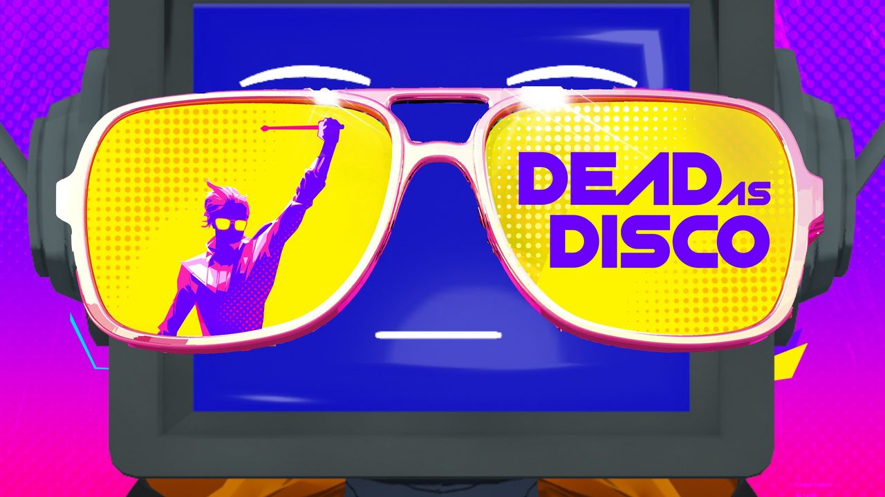
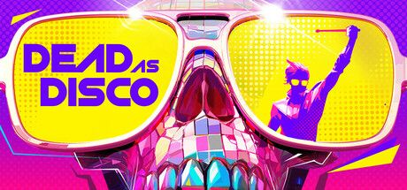
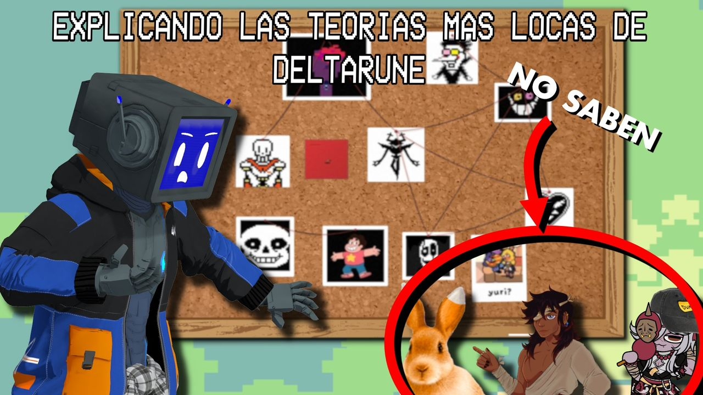
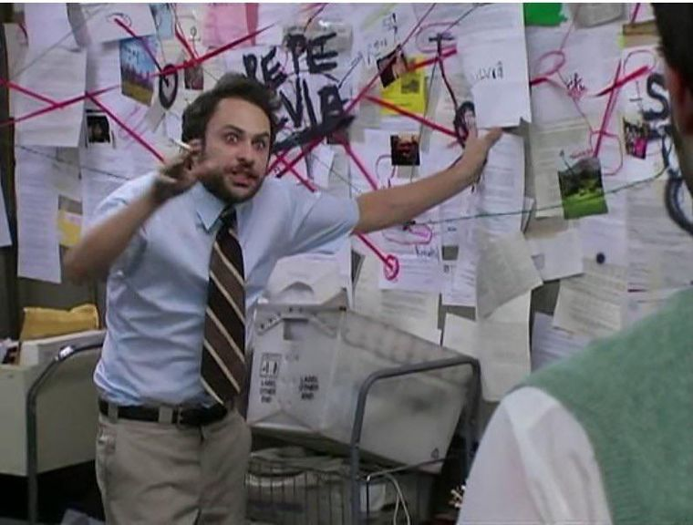
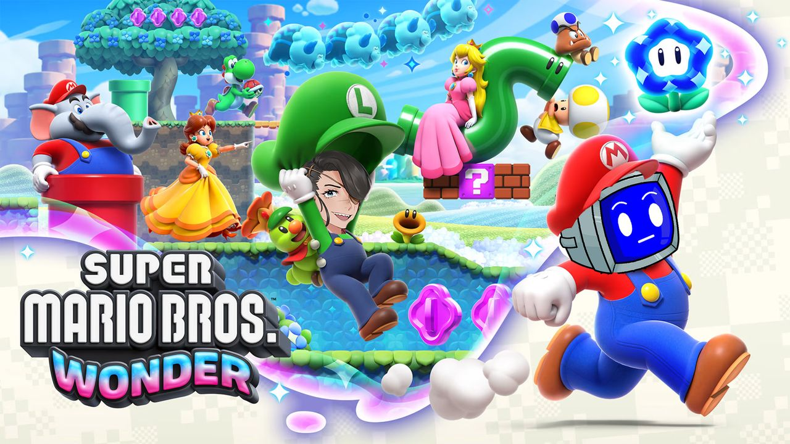
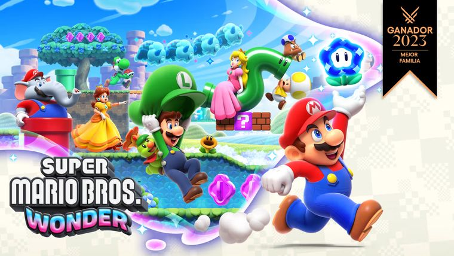
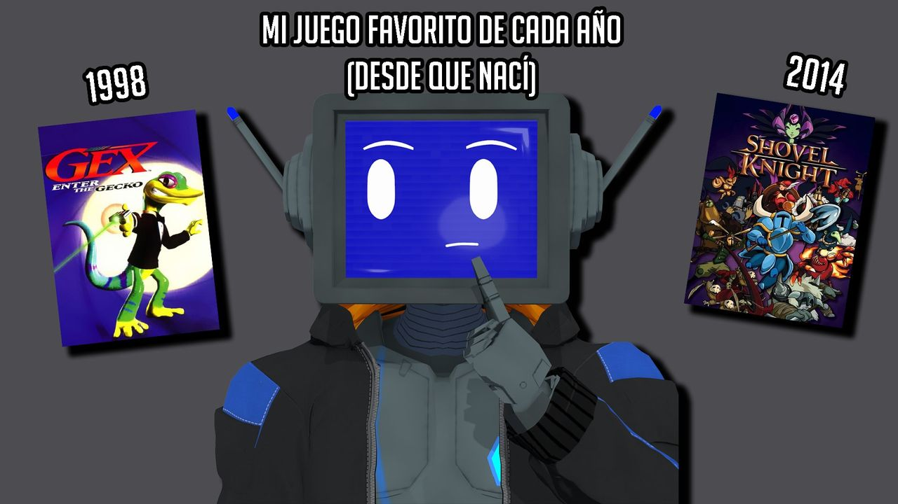
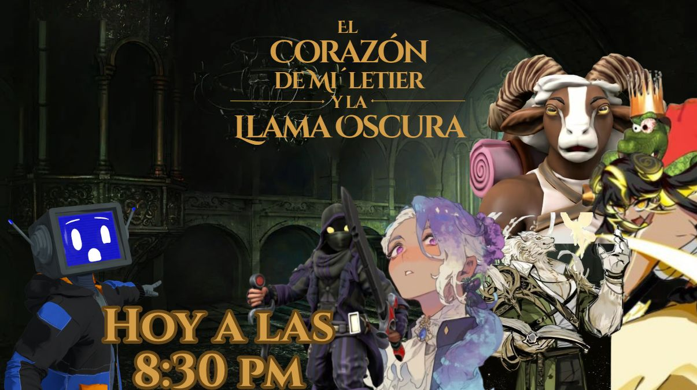

Diseñador de Juegos Digitales y Licenciado en Diseño (Universidad Andrés Bello, aprobado con distinción).
Creo miniaturas, video, overlays y widgets para streaming.
Diseño gráficoMiniaturas y piezas para videos y transmisiones.
Video y eventosEdición de trailers y producción de un torneo online.
Widgets QNTMOSOverlays de chat en HTML, CSS y JavaScript.
Blender · Photoshop · Affinity Photo · Premiere Pro · DaVinci Resolve · HTML/CSS/JSLn 1, Col 1
C:\Miniaturas — Explorador_□×
Miniaturas
Formato 16:9 pensado para leerse rápido en el feed. Personaje posado y renderizado en Blender; composición y retoque en Photoshop / Affinity Photo.
En las piezas basadas en arte existente, pulsa “Ver referencia” para comparar.


RESULTADO
Dead as Disco
Miniatura · video de juego
Reinterpreté el arte oficial: reemplacé la calavera por mi personaje 3D, llevé el banner a 16:9 y reubiqué lentes y título manteniendo la paleta y el trama de puntos del original.
Blender
Photoshop / Affinity
Arte oficial del juego


RESULTADO
Teorías de Deltarune
Miniatura · video de análisis
Adapté el meme del “tablero de conspiración” al universo del juego: corcho, hilo rojo, tipografía pixelada y un llamado de atención que guía la mirada.
Blender
Photoshop / Affinity
Concepto
Meme usado como inspiración


RESULTADO
Super Mario Bros. Wonder
Miniatura · transmisión en colaboración
Integración de personajes en el key art oficial respetando iluminación, contorno y estilo, y limpieza de la composición quitando el sello de premio.
Photoshop / Affinity
Integración
Key art oficial

RESULTADO
Mi juego favorito de cada año
Miniatura · video de ranking
Composición simple y legible: personaje al centro, dos portadas como pistas y años en los extremos que explican el formato sin leer el título.
Blender
Photoshop / Affinity
Composición original

RESULTADO
El Corazón de Mi´letier
Anuncio · transmisión en grupo
Anuncio de transmisión colaborativa con la estética dorada del juego, horario destacado y una composición grupal que equilibra estilos distintos.
Blender
Photoshop / Affinity
Tipografía
Composición original
5 objetos1280 × 720
trailer_cvt.mp4 — Reproductor_□×
Trailer de anuncio · Campeonato VTuber
Video promocional · 0:43 · 60 fps
Trailer para anunciar el regreso del torneo y abrir inscripciones: textos sobre negro que generan expectativa, combates y primeros planos de los participantes, y cierre con logo, fecha y llamado a inscribirse.
Grabé el gameplay, revisé los VODs de ediciones anteriores para elegir las mejores tomas e hice toda la edición y los títulos.
Premiere Pro
DaVinci Resolve
Grabación de gameplay
Títulos
Música: pista de un videojuego de pelea, no es de mi autoría.
torneo_cvt.txt — Propiedades_□×
Organización del Campeonato VTuber (CVT)
Evento online · creadores de contenido
Invité a creadores de contenido VTuber a participar, recopilé sus modelos 3D y los cargué en el juego de peleas VRAST.
Coordiné a otros creadores como comentaristas y transmitimos los combates, disputados por la CPU con los personajes de cada participante, en formato “kayfabe”: todos sabían que eran combates automáticos, pero se narraban y vivían como si fueran reales, lo que convertía cada ronda en entretenimiento.
También diseñé el formato de competencia, incluida una edición con doble eliminación, y produje las piezas de difusión.
QNTMOS Widgets — Panel de control_□×
QNTMOS
Widgets de chat para streaming
Línea de overlays de chat que diseño y programo bajo mi marca QNTMOS para transmisiones en Twitch. Cada uno parte de una referencia visual reconocible y se vuelve una herramienta configurable para el streamer.
Las vistas previas de abajo están funcionando en vivo con mensajes de prueba.
EN VIVO
QNTMOS Window Chat
Cada mensaje aparece como una ventana de Windows 98: barra de título con el nombre de quien escribe, botones de ventana, bordes biselados y la clásica fuente pixelada.
6 paletas + colores personalizados
Lista, aleatorio o por bordes
Mensajes destacados y /me
Fuente embebida en base64
QNTMOS XP Chat
Versión hermana en estilo Windows XP “Luna”: barra de título brillante y redondeada, botón de cierre rojo, sombra suave y panel blanco para el mensaje.
Tarjetas con degradado al estilo MSN Messenger, con la foto de perfil de Twitch en el marco clásico y un sonido opcional de mensaje nuevo.
Color del marco por rol, color de nombre o estado
Foto de perfil de Twitch con respaldo
6 paletas + degradado personalizado
Sonido de mensaje nuevo
QNTMOS Terminal Chat
Cada mensaje se escribe como un comando en una pantalla de fósforo con líneas de barrido, parpadeo y curvatura. También funciona como caja de alertas estilo terminal.
6 colores de fósforo
Efectos CRT activables uno a uno
Efecto máquina de escribir
Alertas de follows, subs, bits y raids
QNTMOS Fantasy Chat
Tarjetas oscuras con borde dorado y nombres en versalitas, con un efecto de relámpago que cae sobre los mensajes destacados o con bits.
7 paletas temáticas
Relámpago por puntos de canal o bits
Animaciones de entrada
Tipografía Cinzel + Lato
QNTMOS Post-it Chat
Los mensajes se convierten en notas adhesivas levemente giradas, escritas con plumón, con un alfiler del color del nombre del usuario y una animación de caída al desaparecer.
Color único o aleatorio por nota
6 paletas + personalizada
Rotación aleatoria configurable
Animación de caída al salir
RPG Textbox Chat
Convierte el chat en cajas de diálogo de RPG clásico: el retrato es la foto de Twitch de quien escribe y el texto aparece letra por letra, con sonido opcional.
Modo caja única (cola) o lista
Máquina de escribir con sonido
Retrato con animación al hablar
6 paletas + personalizada
Todos: HTML, CSS y JavaScript para StreamElements; emotes de Twitch, 7TV, BTTV y FFZ; insignias; pronombres; filtros de usuarios y bots; modo de vista previa.